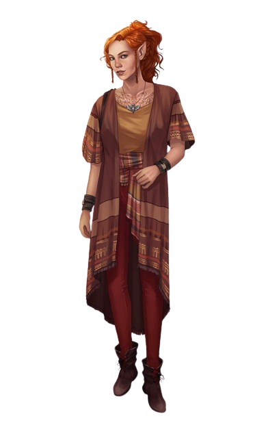

Trecho
FLINT OLHAVA PARA O SOL POENTE. ELE IMAGINOU TER VISTO a figura de um homem caminhando ao longo do caminho. Erguendo-se, Flint recuou para a sombra de um alto pinheiro para ver melhor. As passadas do homem eram marcadas por uma graça natural – uma graça élfica, Flint diria; No entanto, o corpo do homem espessura e musculatura de um humano, enquanto que a barba definitivamente era de natureza humana. Todos os anões podiam ver que a face do homem por baixo do capuz verde tinha uma pele bronzeada e uma barba marromavermelhada. Um arco longo estava preso em um dos seus ombros e uma espada descansava no seu lado esquerdo. Ele estava vestido em couro macio, finamente tecido em intrincados desenhos amados pelos elfos. Mas, nenhum elfo no mundo de Krynn poderia ter uma barba... nenhum elfo, mas...
"Tanis?" disse Flint, hesitantemente, à medida que o homem se aproximava.
'Eu mesmo." O recém-chegado de rosto barbudo acompanhado por um largo sorriso. Ele abriu seus braços e, antes que o anão pudesse pará-lo, envolveu Flint em um abraço que levantou-o do chão. O anão apertou forte seu velho amigo por um instante, depois, lembrando-se da sua compostura, se contorceu e se livrou do abraço do meioelfo. –Margaret Weis e Tracy Hickman, Dragões do Crepúsculo de Outono
Vagando entre dois mundos mas, na verdade, não pertencendo a nenhum dos dois, meio-elfos combinam o que alguns dizem ser as melhores qualidades dos seus parentes elfos e humanos: a curiosidade, inventividade e ambição humanas temperadas pelos sensos refinados, amor a natureza e gostos artísticos dos elfos. Alguns meio-elfos vivem entre os humanos, separados por suas diferenças emocionais e físicas, vendo seus amigos e amores envelhecer enquanto o tempo malmente os toca. Outros vivem entre os elfos, crescendo impacientes à medida que atingem a maturidade nos reinos élficos intermináveis, enquanto seus amigos continuam a viver como crianças. Muitos meio-elfos, incapazes de se encaixar em nenhuma dessas sociedades, escolhem uma vida solitária, vagando ou se juntando a outros desafortunados e adentrando uma vida de aventura.
De Dois Mundos
Para os humanos, os meio-elfos parecem elfos, e para os elfos, eles parecem humanos. Na aparência, eles estão entre ambos os parentes, já que eles não são nem tão esbeltos quanto os elfos nem tão largos quanto os humanos. Eles medem entre 1,5 metro e 1,8 metro de altura e pesam entre 50 kg e 90 kg, sendo os homens apenas um pouco mais altos e pesados que as mulheres. Meio-elfos possuem pelos faciais e, as vezes, deixam a barba crescer para esconder sua ancestralidade élfica. A cor e características dos meio-elfos reside entre seus parentes humanos e elfos e possui uma variedade maior até que a encontrada entre ambas as raças. Eles tendem a ter os olhos dos seus pais elfos.
Diplomatas ou Andarilhos
Meio-elfos não possuem terra própria, no entanto, eles são bem-vindos em cidades humanas e um pouco menos bem recebidos em florestas élficas. Em cidades grandes, em regiões em que elfos e humanos costumam interagir, meio-elfos podem ser numerosos o suficiente para formar pequenas comunidades entre eles. Eles gostam da companhia de outros meio-elfos, o único povo que realmente entende o que é viver entre dois mundos.
Na maior parte do mundo, no entanto, meio-elfos são incomuns o suficiente ao ponto de que um pode viver anos sem encontrar outro. Alguns meio-elfos preferem evitar completamente companhias, vagando pela natureza como caçadores, mateiros, patrulheiros ou aventureiros, visitando a civilização em raras ocasiões. Como os elfos, eles são guiados pela sede por viagens que acompanha sua longevidade. Outros, em contraste, imergem no seio da sociedade, aproveitando-se do seu carisma e perícias sociais efetuando papeis diplomáticos ou de vigaristas.
Traços Raciais dos Elfos
Seu personagem meio-elfo possui algumas qualidades em comum com os elfos e algumas são exclusivas dos meioelfos.
Aumento no Valor de Habilidade.
Seu valor de Carisma aumenta em 2 e outros dois valores de habilidade, à sua escolha, aumentam em 1.
Idade.
Meio-elfos atingem a maturidade ao mesmo tempo que os humanos atingem a idade adulta, por volta dos 20 anos. Eles vivem muito mais que os humanos, no entanto, raramente ultrapassam os 180 anos.
Tendência.
Meio-elfos compartilham a veia caótica da sua herança élfica. Eles valorizam tanto a sua liberdade quanto sua expressão criativa, não demonstrando qualquer apresso por líderes ou seguidores. Eles se irritam com regras, ressentindo com exigências de outros e, as vezes, se provam incertos, ou pelo menos, imprevisíveis.
Tamanho.
Meio-elfos tem aproximadamente a mesma altura dos humanos, variando entre 1,50 metro e 1,80 metro. Seu tamanho é Médio.
Deslocamento.
Seu deslocamento base de caminhada é 9 metros.
Visão no Escuro.
Graças ao seu sangue élfico, você tem uma visão superior no escuro e na penumbra. Você enxerga na penumbra a até 18 metros como se fosse luz plena, e no escuro como se fosse na penumbra. Você não pode discernir cores no escuro, apenas tons de cinza.
Ancestral Feérico.
Você possui vantagem em testes de resistência contra encantamento e magia não pode colocar você pra dormir.
Versatilidade em Perícia.
Você ganha proficiência em duas perícias, à sua escolha.
Idiomas.
Você sabe falar, ler e escrever Comum, Élfico e um idioma adicional, à sua escolha.